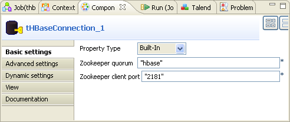
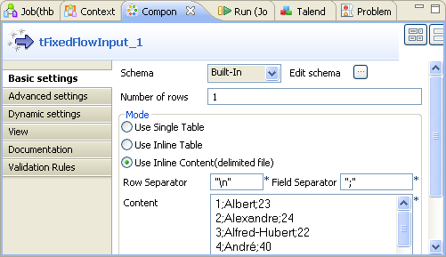
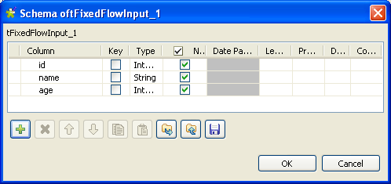
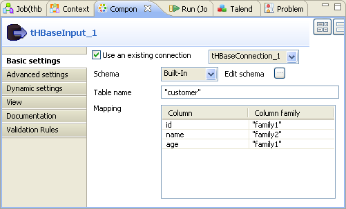
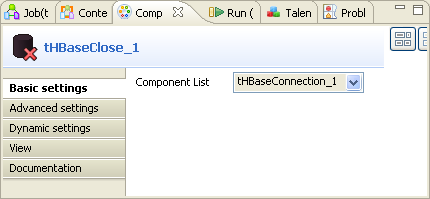

![[Avertissement]](../images/warning.png) | |
Ce composant est disponible dans la Palette de votre studio si vous avez souscrit à l'édition correspondante de Talend Enterprise Data Integration Big Data edition . |
|
Famille de composant |
Databases/HBase | ||||
|
Fonction |
Le composant tHBaseInput lit une base de données et en extrait des champs à l’aide de requêtes. | ||||
|
Objectif |
Le tHBaseInput exécute une requête en base de données selon un ordre strict qui doit correspondre à celui défini dans le schéma. La liste des champs récupérée est ensuite transmise au composant suivant via une connexion de flux (Main row). | ||||
|
Basic settings |
Property type |
Peut être Built-in ou Repository. - Built-in : Propriétés utilisées ponctuellement. - Repository : Sélectionnez le fichier dans lequel sont stockées les propriétés du composant. Les champs suivants sont alors pré-remplis à l’aide des données collectées. | |||
|
|
|
Cliquez sur cette icône pour ouvrir l’assistant de configuration de connexion à la base de données et enregistrer les paramètres de connexion que vous avez définis dans la vue Basic settings du composant. Pour plus d’informations sur comment définir et stocker des paramètres de connexion de base de données, consultez le Guide Utilisateur de Talend Enterprise Studio | |||
|
|
Use an existing connection |
Cochez cette case et sélectionnez le composant approprié tHBaseConnection dans la liste Component list si vous souhaitez réutiliser les paramètres d'une connexion déjà définie. | |||
|
|
Zookeeper quorum | Saisissez le nom ou l'URL du service Zookeeper que vous utilisez pour coordonner la transaction entre Talend et HBase. | |||
|
|
Zookeeper client port |
Saisissez le numéro du port d'écoute client du service Zookeeper que vous utilisez. | |||
|
|
Schema et Edit schema |
Un schéma est une description de lignes, i.e., il définit le nombre de champs qui sont traités et passés au composant suivant. Le schéma est soit local (Built-in), soit distant (Repository).
| |||
|
|
|
Built-in: Le schéma sera créé et conservé pour ce composant seulement. Voir également le Guide utilisateur de Talend Enterprise Studio. | |||
|
|
|
Repository : Le schéma existe déjà et est stocké dans le Repository. Ainsi, il peut être réutilisé. Voir également le Guide utilisateur de Talend Enterprise Studio. | |||
| Table name | Saisissez le nom de la table de la base de données HBase de laquelle vous souhaitez extraire les colonnes. | ||||
| Mapping | Renseignez cette table afin de spécifier la ou les colonne(s) à extraire ainsi que la ou les famille(s) correspondante(s) des colonnes. La colonne Column de cette table est automatiquement renseignée une fois le schéma défini. | ||||
|
Advanced settings |
tStatCatcher Statistics |
Cochez cette case pour collecter les données de log au niveau du composant. | |||
| Properties |
Si vous devez utiliser la configuration personnalisée pour votre HBase, renseignez dans cette table la ou les propriété(s) à personnaliser. Lors de l'exécution, la ou les propriété(s) personnalisée(s) vont écraser celles définies précédemment pour HBase. Par exemple, vous devez définir la valeur de la propriété dfs.replication comme étant 1 pour la configuration de HBase. Vous devez ensuite ajouter une ligne à la table à l'aide du bouton [+] et saisir le nom et la valeur de cette propriété dans la ligne .
| ||||
|
Utilisation |
Ce composant est un composant d'entrée et requiert un composant de sortie. | ||||
Dans ce scénario, un Job a six composants est utilisé afin d'échanger des données clients avec une base de données HBase.
Ces six composants sont :
un tHBaseConnection : crée une connexion à votre base de données HBase.
un tFixedFlowInput : crée les données à écrire dans votre base HBase. Dans un cas d'utilisation réel, ce composant peut être remplacé par d'autres composants d'entrée, tels que le tFileInputDelimited.
un tHBaseOutput : écrit les données qu'il reçoit du composant précédent dans votre base de données HBase.
un tHBaseInput : extrait les colonnes souhaitées de votre base de données HBase.
un tLogRow : présente les résultats d'exécution.
un tHBaseClose: ferme la connexion.
Pour reproduire ce scénario, procédez comme dans les sections suivantes.
![[Note]](../images/note.png) | |
Avant de commencer à reproduire le scénario, vérifiez que votre base de données Hbase et votre service Zookeeper ont été installés et configurés correctement. Ce scénario explique uniquement comment utiliser Talend pour effectuer une transaction avec une base de données HBase. |
Pour ce faire, procédez comme suit :
Déposez un tHBaseConnection, un tFixedFlowInput, un tHBaseOutput, un tHBaseInput, un tLogRow et un tHBaseClose de la Palette dans l'espace de modélisation graphique.
Cliquez-droit sur le composant tHBaseConnection afin d'ouvrir son menu contextuel et sélectionnez Trigger > On Subjob Ok pour connecter ce composant au tFixedFlowInput.
Répétez l'opération afin de créer le lien OnSubjobOk du tFixedFlowInput au tHBaseInput puis au tHBaseClose.
Cliquez-droit sur le tFixedFlowInput et sélectionnez Row > Main afin de connecter ce composant au tHBaseOutput.
Répétez l'opération pour créer le lien Main du tHBaseInput au tLogRow.
Les composants de ce scénario sont placés et connectés entre eux. Vous devez les configurer.
Pour configurer la connexion à votre service Zookeeper puis à la base HBase souhaitée, procédez comme suit :
Dans l'espace de modélisation de votre Studio, double-cliquez sur le composant tHBaseConnection pour ouvrir sa vue Component.
Dans le champ Zookeeper quorum, saisissez le nom ou l'URL du service Zookeeper que vous utilisez. Dans cet exemple, le nom du service est hbase.
Dans le champ Zookeeper client port, saisissez le numéro du port client d'écoute. Dans cet exemple, saisissez 2181.
Pour ce faire, procédez comme suit :
Dans l'espace de modélisation graphique, double-cliquez sur le composant tFixedFlowInput pour ouvrir sa vue Component.
Dans cette vue, cliquez sur le bouton [...] à côté du champ Edit schema afin d'ouvrir l'éditeur de schéma.
Cliquez trois fois sur le bouton [+] pour ajouter trois lignes, puis, dans la colonne Column, renommez respectivement les trois lignes comme suit : id, name et age.
Dans la colonne Type, cliquez sur chacune de ces lignes, puis dans la liste déroulante, sélectionnez le type de données de chaque ligne. Dans ce scénario, sélectionnez Integer pour id et age, String pour name.
Cliquez sur OK afin de valider ces modifications et acceptez la propagation proposée par la fenêtre pop-up.
Dans la zone Mode, sélectionnez Use Inline Content (delimited file) pour afficher les champs à éditer.
Dans le champ Content, saisissez les données délimitées à écrire dans la base de données HBase, séparées par un
;. Dans cet exemple, les données sont :1;Albert;23 2;Alexandre;24 3;Alfred-Hubert;22 4;André;40 5;Didier;28 6;Anthony;35 7;Artus;32 8;Benoît;56 9;Catherine;34 10;Charles;21 11;Christophe;36 12;Christian;67 13;Clément ;64 14;Danniel;54 15;Elisabeth;58 16;Emile;32 17;Gregory;30Double-cliquez sur le composant tHBaseOutput afin d'afficher sa vue Component.
Si ce composant n'a pas le même schéma que le composant précédent, une icône d'avertissement apparaît. Dans ce cas, cliquez sur le bouton Sync columns afin de récupérer le schéma du composant précédent. L'icône d'avertissement disparaît.

Cochez la case Use an existing connection puis sélectionnez la connexion précédemment configurée. Dans cet exemple, sélectionnez tHBaseConnection_1.
Dans le champ Table name, saisissez le nom de la table à créer dans la base de données HBase. Dans cet exemple, saisissez customer.
Dans le champ Action on table, sélectionnez l'action que vous souhaitez effectuer, dans la liste déroulante. Dans ce scénario, sélectionnez Drop table if exists and create. Ainsi, si une table nommée customer existe déjà dans la base de données HBase, elle sera effacée avant la création de la nouvelle table.
Cliquez sur l'onglet Advanced settings afin d'ouvrir la vue correspondante.

Dans la table Family parameters, ajoutez deux lignes en cliquant deux fois sur le bouton [+] et renommez-les respectivement family1 et family2. Laissez les autres colonnes vides. Ces deux colonnes seront créées dans la base de données HBase avec les options de performances par défaut.
La table Family parameters est disponible uniquement lorsque l'action sélectionnée dans la liste Action on table est de créer une table dans la base de données HBase. Pour plus d'informations concernant la table Family parameters, consultez la section intitulée « tHBaseOutput ».
Dans la table Families de la vue Basic settings, saisissez le nom des familles dans la colonne Family name, chaque nom correspondant à la colonne contenue par la famille. Dans cet exemple, les colonnes id et age appartiennent à la famille family1 et la colonne name à la famille family2.
Ces familles de colonnes doivent déjà exister dans la base de données HBase à laquelle vous vous connectez ou elles doivent être définies dans la table Family parameters de la vue Advanced settings.
Pour ce faire, effectuez les opération suivantes :
Double-cliquez sur le tHBaseInput afin d'ouvrir sa vue Component.
Cochez la case Use an existing connection puis sélectionnez la connexion configurée précédemment. Dans cet exemple, la connexion est tHBaseConnection_1.
Cliquez sur le bouton [...] à côté du champ Edit schema pour ouvrir l'éditeur du schéma.

Cliquez trois fois sur le bouton [+] pour ajouter trois colonnes et renommez-les respectivement id, name et age dans la colonne Column. Cela signifie que vous allez extraire ces trois colonnes de la base HBase.
Sélectionnez le type de chaque colonne. Dans cet exemple, sélectionnez Integer pour id et age, String pour name.
Cliquez sur OK pour valider ces modifications et acceptez la propagation proposée par la fenêtre pop-up.
Dans le champ Table name, saisissez le nom de la table dont vous souhaitez extraire les colonnes. Dans ce scénario, la table se nomme customer.
Dans la table Mapping, la colonne Column a été automatiquement renseignée, puisque le schéma est défini. Saisissez simplement le nom de chaque famille dans la colonne Column family, chaque nom correspondant à la colonne que la famille contient.
Double-cliquez sur le composant tHBaseClose pour ouvrir sa vue Component.
Dans le champ Component List, sélectionnez la connexion que vous souhaitez fermer. Dans cet exemple, sélectionnez tHBaseConnection_1.
Pour exécuter ce Job, appuyez sur F6.
La vue Run s'ouvre automatiquement et vous pouvez voir les résultats d'exécution.
Les colonnes souhaitées sont extraites. Vous pouvez donc les traiter selon vos besoins.
En vous connectant à votre base de données HBase, vous pouvez constater que la table customer a bien été créée.